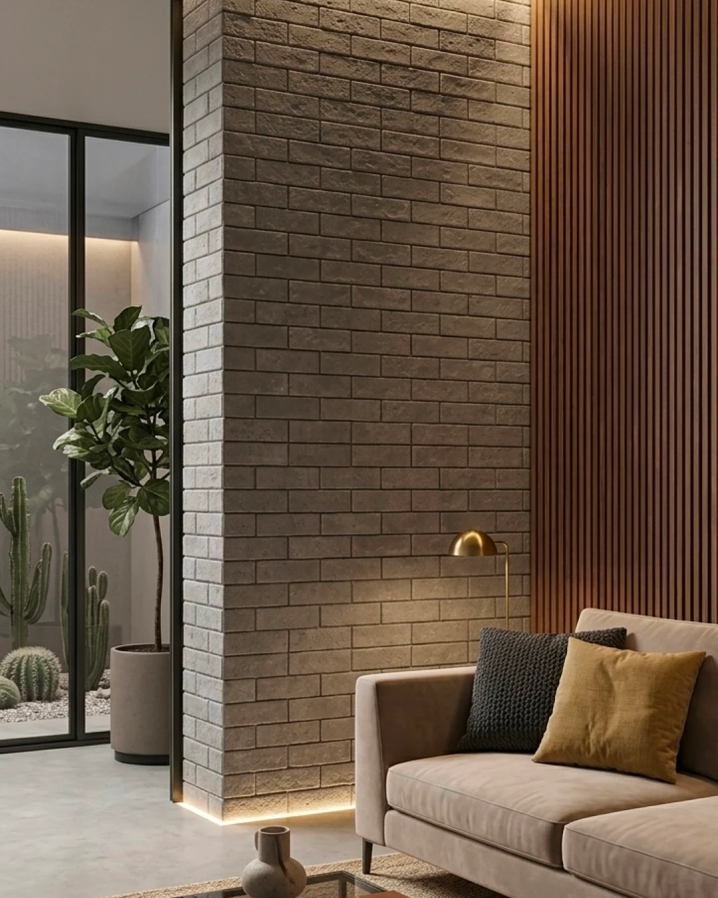

O que diferencia as duas linhas
O Rockface é um revestimento cerâmico com acabamento que imita a textura de pedra natural — superfície irregular, com alto relevo e caráter marcante. Já o Cimentício apresenta uma superfície lisa e uniforme, com variação sutil de tom e aparência de concreto polido. São propostas opostas: uma rústica e orgânica, a outra contemporânea e industrial. Ambas aparecem entre as apostas mais fortes nas nossas tendências de fachada para 2026.
Aplicações ideais para o Rockface
A textura profunda do Rockface funciona melhor em paredes que terão destaque visual — fachadas, painéis de TV, paredes de entrada ou churrasqueiras. Sua irregularidade cria um jogo de sombras que muda conforme a incidência de luz ao longo do dia, o que valoriza especialmente ambientes com iluminação rasante. É uma boa escolha também para revestir pilares e muros de jardim.

O Rockface é naturalmente mais resistente ao tráfego visual — pequenos arranhões ou marcas se perdem na textura. Por isso também funciona bem em paredes externas sujeitas a intempéries.
Aplicações ideais para o Cimentício
O Cimentício é a escolha mais versátil das duas. Seu acabamento liso se integra a projetos contemporâneos e industriais sem competir com móveis, plantas ou obras de arte. Funciona bem em salas, cozinhas, banheiros e fachadas de edifícios comerciais. Os tons neutros — Naevel Claro, Sorvel Leve e Thurgo Denso — combinam com paletas cromáticas diversas.

As linhas não precisam ser excludentes. Uma composição com Rockface no painel externo e Cimentício nos ambientes internos cria uma transição elegante entre exterior e interior — textura bruta fora, lisura contemporânea dentro.
Instalação: o que muda na prática
O Rockface, por ter relevo alto, exige mais atenção no assentamento — a argamassa precisa preencher bem os fundos das cavidades para garantir aderência total. O preenchimento das juntas também requer paciência: use o rejunte com espátula ou saco de confeiteiro para alcançar o interior das texturas sem deixar bolsões vazios.
O Cimentício é mais simples de instalar por ser liso e regular. O principal cuidado é manter as juntas finas e uniformes — o que acentua o visual de placa de concreto que caracteriza a linha.
Manutenção no longo prazo
O Rockface, por ser poroso e irregular, acumula mais poeira. Recomenda-se aspiração periódica com escova de cerdas macias e uma lavagem anual com água e sabão neutro. A impermeabilização é recomendada especialmente em aplicações externas.
O Cimentício é mais fácil de limpar — a superfície lisa não retém sujeira e um pano úmido resolve na maioria dos casos. Evite produtos abrasivos que possam riscar o acabamento.